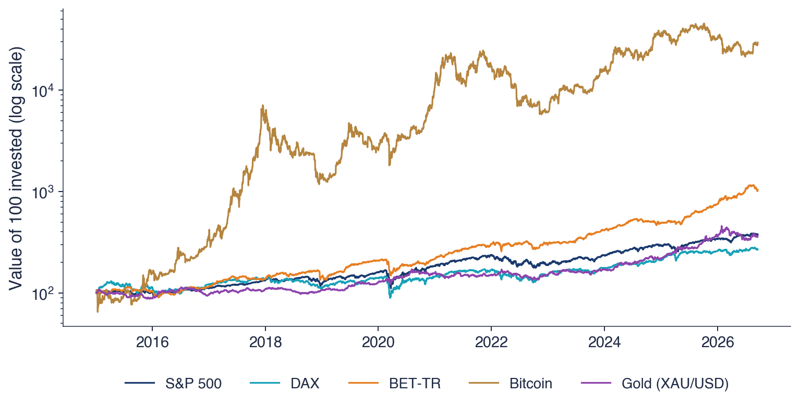
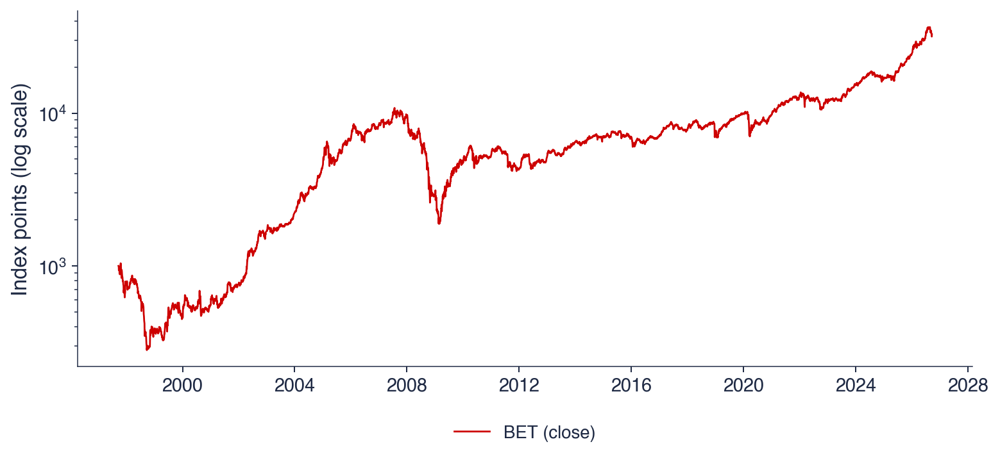
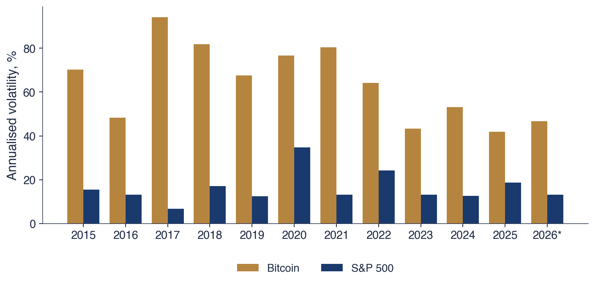

Bucharest University of Economic Studies IDA Institute Digital Assets Blockchain Research Center AI4EFin Artificial Intelligence for Energy Finance Romanian Academy, Institute for Economic Forecasting MSCA Digital Finance
The primary role of the capital market is allocation of ownership of the economy's capital stock. In general terms, the ideal is a market in which prices provide accurate signals for resource allocation
A financial market turns savings into capital and spreads risk among those willing to bear it. It does so through prices, and every trade leaves behind a price and a time stamp. For a statistician, a market is therefore a generator of data: the series of daily closing prices of an index, an exchange rate or a crypto asset is the raw material of every chapter of this course.
The data of the chapter show why these series need their own statistical methods. From January 2015 to September 2026, 100 units invested in the S&P 500 grew to about 370, and 100 units in Bitcoin to about 25,740, but the annualised volatility of Bitcoin was 66.7%, against 17.7% for the S&P 500. In 2008–2009 the S&P 500 lost 56.8% from its previous peak and the Bucharest index BET lost 82.5%, and BET needed more than thirteen years to return to its 2007 peak. Over 6,714 trading days since 2000, the S&P 500 had 46 daily moves larger than four standard deviations, where the Normal distribution with the same mean and variance would predict 0.43.
The chapter presents how the course is organised, what financial markets do, what the data of 2026 show, how markets and their statistical models developed over four centuries, and the first tools of the course: simple and log returns, volatility and its annualisation, heavy tails and the drawdown.

Value of 100 units invested in January 2015 in the S&P 500, the DAX, the BET-TR, gold and Bitcoin, on a logarithmic vertical scale; indices in local currency, gold and Bitcoin in US dollars; daily closes until 18 September 2026.
What you will be able to do
Explain how the course is organised and assessed.
Name the main asset classes and the participants in a market.
Read a growth chart, a risk–return chart and a drawdown chart.
Compute a simple and a log return from two prices.
State what must be checked in an analysis generated by AI.
Seminar 0 comes before this lecture and practises the same tools on data.
Chapter plan
Course OrganisationAssessment, textbook, the map of chapters 0–16, materials, seminars, the team project and the AI policy.
The Role of Financial MarketsThe functions of a market, its participants, the asset classes, the order book and the role of statistics.
A Short History of MarketsThe first exchanges and bubbles, 1929, electronic trading, the Bucharest Stock Exchange and the statistical models of prices.
AI for Scientific DiscoveryAn open question on the volatility of Bitcoin, the use of AI assistants and the checks they require.
ConclusionsSelf-assessment questions and the questions of Chapter 1.
Course Organisation
Statistics of Financial Markets applies probability and statistics to the prices, returns and risks of traded assets. This section describes what the discipline studies, how the course is assessed, which textbook it follows, how its seventeen chapters are arranged, which materials accompany each chapter, how seminars and the team project work, and the rules for using artificial intelligence (AI) tools.
The chapter is built around three starting questions: what a statistician measures on a market, which numbers describe the markets of 2026, and how one goes from prices to returns. Part I answers the first two. It presents the organisation of the course and then the economic role of financial markets, followed by the data: growth, risk, drawdowns and implied volatility for the main markets since 2015 and for the Bucharest market since 1997.
Part II places these numbers in history and introduces the first tools. A short history of exchanges, crashes and models shows that the statistical questions of the course arose from concrete episodes. The section on returns defines the simple and the log return, the mean, the volatility and its annualisation, and documents two regularities of daily returns: volatility clustering and heavy tails. The chapter ends with an open question on Bitcoin volatility, used to show how AI assistants can help a research project and what has to be checked in their output.
After the chapter, the reader can explain how the course is organised and assessed, name the main asset classes and market participants, read a growth chart, a risk–return chart and a drawdown chart, compute a simple and a log return from two prices, and state what must be checked in an analysis produced by AI. Seminar 0 takes place before this lecture and practises the same tools on data.
In brief
Guiding questions
what does a statistician measure on a market?
which numbers describe 2026 markets?
how do we get from prices to returns?
Part I
how the course works: evaluation, textbook, chapters, AI policy
why financial markets matter, and what the 2026 data show
Part II
a short history of exchanges, crashes and models
returns and first statistics, a teaser
AI for scientific discovery: one open question
After this chapter you can
explain how the course is organised and graded
name the main asset classes and market participants
read a growth chart, a risk–return chart and a drawdown chart
compute a simple and a log return from two prices
state what must be checked in an AI-generated analysis
Seminar 0 comes before this lecture and practises the same tools on data
Statistics of financial markets is the set of statistical methods for the prices, returns and risks of traded assets. It has three tasks. Description asks how large and how variable returns are. Modelling asks which probability distribution describes returns and how they depend on their own past. Risk measurement asks how large the loss can be on an unfavourable day, and it is the task that connects the discipline to the regulation of banks and funds.
Financial data need their own methods because they violate the assumptions of introductory statistics in systematic ways. Extreme days are much more frequent than the Normal distribution predicts: the distribution of returns has heavy tails. Calm periods alternate with turbulent ones, so that large returns tend to be followed by large returns; this is volatility clustering. In crises, markets fall together, and the correlations between assets rise exactly when diversification would be most needed.
These regularities recur across markets, periods and sampling frequencies, and they are known as the stylised facts of asset returns (Cont, 2001). A model of returns is judged first by whether it reproduces them. Chapter 2 studies them systematically; the present chapter shows the first two on the S&P 500 in the section on returns.
In brief
Statistics of financial markets: statistical methods for prices, returns and risks of traded assets
describe: how large and how variable are returns?
model: which distribution, which dependence over time?
measure risk: how large can a loss be on a bad day?
Why financial data need their own methods
extreme days are far more frequent than the Normal distribution predicts (heavy tails)
calm and turbulent periods alternate (volatility clustering)
markets fall together in crises: diversification weakens when it is most needed
These regularities are the stylised facts of returns (Cont (2001)), studied in Chapter 2
The course belongs to the bachelor's programme Statistics and Data Science, in the third year, second semester, at the Faculty of Cybernetics, Statistics and Economic Informatics (CSIE) of the Bucharest University of Economic Studies (ASE), in the academic year 2026/2027. The lectures are given by Prof. Daniel Traian Pele.
The course assumes probability and statistics, linear algebra and Python. Probability supplies the language of random variables and distributions in which returns are modelled; linear algebra is needed for portfolios and multivariate models; Python is the language of every notebook and Quantlet of the course.
All materials are on the course website, danpele.github.io/SFM: slides, seminars, notebooks, Quantlets and quizzes, in English and in Romanian.
In brief
Programme
Bachelor's programme Statistics and Data Science, year 3, semester 2
Faculty of Cybernetics, Statistics and Economic Informatics (CSIE), ASE Bucharest
The final grade has three components. The written examination counts for 70%. It consists of problems on real data and short interpretation questions of the kind solved in the seminars, and it covers the lectures and seminars of Chapters 0 to 16.
The team project counts for 20%. It asks a research question on real market data and answers it with the methods of the course; its deliverables and criteria are described in The Team Project.
Attendance at lectures and seminars and the chapter quizzes together count for the remaining 10%. The quizzes are taken on the course website with the ASE Google account, and the name and score are recorded for the grade.
In brief
Written exam: 70%
problems on real data and short interpretation questions, as in the seminars
covers the lectures and the seminars of Chapters 0–16
Team project: 20%
one research question on real market data, answered with the methods of the course
Attendance and quizzes: 10%
lectures and seminars
the chapter quizzes on the website, taken with the ASE account; name and score are recorded
The core textbook is Franke, Härdle & Hafner (2019),Statistics of Financial Markets: An Introduction, 5th edition, published by Springer. The chapters of the course follow the parts of the textbook devoted to returns, distributions, time series, volatility and risk. The code behind the textbook's figures and examples is public, as the SFE Quantlets.
The seminars use the companion volume of exercises, Borak, Härdle & López-Cabrera (2013),Statistics of Financial Markets: Exercises and Solutions, also published by Springer, whose problems are solved step by step.
Two books serve as further reading: Tsay (2010),Analysis of Financial Time Series, for the time-series models of returns and volatility, and Campbell, Lo & MacKinlay (1997),The Econometrics of Financial Markets, for the econometric tests of market efficiency and asset pricing. The course Statistics of Financial Markets on Quantinar, a peer-to-peer learning platform, covers the same material in video form.
The course has seventeen chapters, numbered from 0 to 16. After this introduction, Chapter 1 treats data, returns and performance indicators, and Chapters 2 to 6 treat the distribution of returns: classical distributions and stylised facts (Chapter 2), α-stable distributions (Chapter 3), probability (Chapter 4), heavy tails and extreme value theory (Chapter 5), and model selection and risk management (Chapter 6).
Chapter 7 asks whether markets are efficient, with the random walk and variance ratio (VR) tests. Chapters 8 to 11 treat volatility and risk: volatility estimators (Chapter 8), ARCH (AutoRegressive Conditional Heteroskedasticity) and GARCH (Generalised ARCH) models (Chapter 9), Value at Risk (VaR), Expected Shortfall (ES) and backtesting (Chapter 10), and the fractal market hypothesis and long memory (Chapter 11).
Chapters 12 to 15 are applications: scoring models (Chapter 12), machine learning (Chapter 13), crypto assets (Chapter 14) and systemic risk (Chapter 15). Chapter 16 reviews the course. The order follows the logic of the discipline: first the distribution of a single return, then its dependence on the past, then the risk measures built on both, and finally their use on particular markets.
In brief
No.
Chapter
0
Introduction
1
Data, returns and indicators
2
Classical distributions and stylised facts
3
\(\alpha\)-stable distributions
4
Probability
5
Heavy tails and extreme value theory
6
Model selection and risk management
7
Efficient markets, random walk and variance-ratio tests
8
Volatility estimators
No.
Chapter
9
ARCH and GARCH models
10
VaR, ES and backtesting
11
Fractal markets hypothesis and long memory
12
Scoring models
13
Machine learning
14
Crypto assets
15
Systemic risk
16
Review
Data and distributions (1–6), market efficiency (7), volatility and risk (8–11), applications (12–15), review (16)
Each chapter comes with lecture and seminar slides, in English and in Romanian, with a lecture notebook and a seminar notebook in Python that open in Google Colab with a single click, and with a self-assessment quiz on the website. Each quiz draws 20 questions from a bank of 24 and explains every answer.
Every chart of the course is a Quantlet: a public folder with the code that produces it, a description file and the chart itself. The icon under each chart in the slides opens the corresponding Quantlet on GitHub, so that any figure can be reproduced and modified.
The market data are daily end-of-day (EOD) data from the provider EODHD (EOD Historical Data), saved once in the course repository. They run until 18 September 2026, so that every computer produces the same numbers. The EUR/RON exchange rate is the official reference rate of the National Bank of Romania (BNR).
In brief
For every chapter
lecture slides and seminar slides, in English and in Romanian
a lecture notebook and a seminar notebook (Python), opened in Google Colab with one click
a self-assessment quiz on the website: 20 questions drawn from a bank of 24, each answer explained
Quantlets: every chart has a public folder with code, a description file (Metainfo.txt) and the chart
the icon under each chart opens its Quantlet on GitHub
Data: daily market data from EODHD (EOD Historical Data), saved once in the course repository
the same numbers on every computer, until 18 September 2026
EUR/RON: the official reference rate of the BNR (National Bank of Romania)
Each seminar takes place before its lecture. It begins with a short introduction that makes it self-contained, so that it can be followed without the lecture. The lecture then explains why the tools of the seminar work and where they fail.
The seminars contain two kinds of exercises. A [Solved] exercise has its full solution in the slides and in the notebook and serves as a model. A [Proposed] exercise is solved by the students, and its solution is discussed in the seminar.
Homework is not graded; it prepares the examination and the project. In every seminar, one exercise presents an answer generated by AI and asks the students to find the error in it, a practice that the AI policy makes part of the course.
In brief
Each seminar comes before its lecture
it starts with a short primer, so it can be followed without the lecture
the lecture then explains why the tools work and where they fail
Two kinds of exercises
[Solved]: full solution in the slides and in the notebook, a model to copy
[Proposed]: you solve it; the solution is discussed in class
Nothing is handed in
homework is practice for the exam and for the project
one exercise in each seminar asks you to find the error in an AI-generated answer
The team project starts from a research question about real market data, chosen by the team. Its answer must use the methods of the course and be supported by the data, so that the question has to be narrow enough to be answered with the series available.
The project has three deliverables. The first is a GitHub repository whose code reproduces every number and every chart of the project from the saved data. The second is a short report with a presentation of the results. The third is the file AI_USE.md, which records the use of AI tools as described in the AI policy.
The project is assessed on the clarity of the question, the correctness of the methods and checks, and the honesty of the interpretation. In an oral defence, every member of the team explains the code and the results. Project ideas are given at the end of each chapter, in the section AI for Scientific Discovery; the one of this chapter is in Your Turn: a Project Seed.
In brief
Question: one research question about real market data, chosen by the team
Deliverables
a GitHub repository whose code reproduces every number and every chart from the saved data
a short report and a presentation of the results
the file AI_USE.md described in the AI policy (next slide)
What we grade
a clear question, correct methods and checks, an honest interpretation
oral defence: each member explains the code and the results
Project seeds appear at the end of every chapter, in the section AI for scientific discovery
AI tools are allowed in the course and must be declared. Here AI means assistants built on a large language model (LLM), which write text and code from a request. Every use is recorded in AI_USE.md: the tool, the request, what was kept and what was corrected.
The student remains responsible for every number and every reference. AI assistants make typical errors: invented references, wrong formulas, and code that runs but computes something other than what was asked. Every reference is checked by opening its DOI (Digital Object Identifier) and comparing the title; every number is recomputed with one's own code from the course data.
The oral defence applies the same principle. A line of code that its author cannot explain is not considered the author's own work.
In brief
AI tools are allowed and must be declared
AI: artificial intelligence; here, assistants based on an LLM (large language model) that write text and code
every use goes into AI_USE.md: the tool, the request, what was kept, what was corrected
You are responsible for every number and every reference
typical AI errors: invented references, wrong formulas, code that runs but computes the wrong thing
every reference: open its DOI (Digital Object Identifier) and check the title
every number: recompute it with your own code from the course data
Oral defence
if you cannot explain a line of your code, it does not count as your work
Seminars come before lectures; nothing is handed in
AI is allowed, declared in AI_USE.md, and checked at the oral defence
Section summary
The course is organised around one discipline, the statistics of prices, returns and risks of traded assets, whose methods are motivated by the stylised facts of returns. The textbook, the Quantlets and the saved data make every result reproducible, and the AI policy extends the same standard to work done with assistants: every number recomputed, every reference opened. The next section asks what financial markets do and why their prices call for statistics.
The Role of Financial Markets
Before measuring returns, it is useful to know what produces them. This section describes the economic functions of a financial market, the participants and the asset classes, and the order book, the mechanism in which prices are formed on an exchange. It ends with the statistical view of the price: tomorrow's price is a random variable, and the course studies its returns, their distribution, their volatility and the risk measures built on them.
A financial market is a place or a system in which buyers and sellers exchange claims on future cash flows, such as shares, bonds, currencies, contracts or tokens, at prices set by supply and demand. The object traded is a claim: a share entitles its holder to future dividends, a bond to coupons and the principal.
Markets perform five functions. They allocate capital, bringing savings to firms and states. They share risk, transferring it to those willing to bear it. They provide liquidity, so that an asset can be turned into cash quickly. They discover prices, because a price aggregates information dispersed among many participants. And they settle payments, so that trades are completed safely.
For a statistician, a market is a generator of data. Every trade leaves behind a price and a moment in time, and the sequence of these prices is the material of the course. The function of price discovery is the link between economics and statistics: if prices aggregate the available information, then their changes should respond only to new information, a hypothesis that Chapter 7 tests.
In brief
Financial market: a place or a system where buyers and sellers exchange claims on future cash flows (shares, bonds, currencies, contracts, tokens) at prices set by supply and demand
Five functions
capital allocation: savings reach firms and governments
risk sharing: risks move to those willing to carry them
liquidity: an asset can be turned into cash quickly
price discovery: prices gather information spread across many traders
payments and settlement: trades are completed safely
For a statistician, the market is a data generator: every trade leaves a price and a time
The diagram shows the flows between three groups. Savers, such as households and pension funds, give money to intermediaries, such as banks, funds and brokers. The intermediaries pass the capital to issuers, firms and states, which in return give shares and bonds to the savers. The trading venues, that is exchanges, dealers and clearing houses, are where the intermediaries meet.
On the buy side are the investors who buy assets: individuals (retail investors), pension funds, insurers and asset managers. Their investment can be passive or active. A passive investment copies an index, for example through an exchange-traded fund (ETF), a fund whose shares trade like a stock. An active investment tries to obtain a higher return than the index.
On the sell side are the brokers, who execute orders, and the market makers, who quote throughout the day a price at which they buy and a price at which they sell. The difference between the two is their compensation for supplying liquidity, and it reappears on the next slide as the bid–ask spread.
The table groups the traded assets into six classes by the cash flow they pay and by their main risks. Equities, such as shares and equity ETFs, pay dividends and carry market risk and firm-specific risk. Bonds, such as government and corporate bonds, pay coupons and the principal, and carry interest-rate risk and credit risk, the risk that the issuer does not pay.
Currencies (FX, foreign exchange) earn the interest-rate differential between the two currencies and depend on the exchange rate and on monetary policy; a quote such as EUR/RON gives the lei paid for one euro. Commodities, such as gold and oil, pay no cash flow, and their risks come from supply and storage. Derivatives, such as futures and options, make payments that depend on the price of another asset and carry leverage and counterparty risk. Crypto assets, such as Bitcoin and Ethereum, pay no cash flow, and their main risks are volatility and regulation.
The classes differ economically, but the statistical toolkit of the course is the same for all of them: returns, volatility, tails and dependence. A return can be computed from any series of prices, whether the price is that of a share, a barrel of oil or a bitcoin.
In brief
Class
Examples
Cash flow
Main risks
Equities
shares, equity ETFs
dividends
market, firm
Bonds
government and corporate bonds
coupons, principal
interest rate, credit
Currencies (FX)
EUR/USD, EUR/RON
interest differential
currency, policy
Commodities
gold, oil
none
supply, storage
Derivatives
futures, options
contingent payoffs
leverage, counterparty
Crypto assets
Bitcoin, Ethereum
none
volatility, regulation
FX (foreign exchange): the currency market; EUR/RON = lei paid for one euro
One statistical toolbox for all of them: returns, volatility, tails and dependence
On an exchange, prices are formed in the order book, the list of all pending orders to buy (bids) and to sell (asks), sorted by price. In the example, buyers wait with 3 units at 99.99, 5 units at 99.98 and 4 units at 99.97; sellers offer 2 units at 100.01, 4 units at 100.02 and 6 units at 100.03. The bars of the diagram show these quantities.
The bid–ask spread is the best ask minus the best bid, here \(100.01 - 99.99 = 0.02\). It is the cost of an immediate trade: an investor who buys at the best ask and sells at once at the best bid loses the spread. A market order buys or sells immediately, at the best prices available, and therefore pays this cost.
Question for the room: a market order to buy 5 units arrives. It takes the 2 units offered at 100.01 and then 3 of the 4 units at 100.02, so its average price is \((2 \times 100.01 + 3 \times 100.02)/5 = 100.016\). After the trade the best ask is 100.02 and the spread widens to 0.03. A large order moves the price against the trader who sends it; this price impact is why the depth of the book, and not only the spread, measures liquidity.
Tomorrow's price is uncertain, so it is modelled as a random variable. With \(P_t\) the price on day \(t\), the sequence \(P_1, P_2, \ldots\) is a time series, a single observed path of a stochastic process. The statistician sees only this path and must infer the properties of the process from it.
The course studies four quantities derived from prices. The return is the relative change of the price (Chapter 1). Its distribution, and in particular how heavy its tails are, is the subject of Chapters 2, 3 and 5. The volatility is the standard deviation of returns and the way it changes over time (Chapters 8 and 9). The risk measures are Value at Risk (VaR) and Expected Shortfall (ES) (Chapter 10). VaR at level α is the negative of the α-quantile of returns, \(\mathrm{VaR}_\alpha = -q_\alpha\): the VaR 1% is the loss that is exceeded on 1% of days.
Behind these quantities lies a central question: can past prices predict future returns? According to the efficient market hypothesis, hardly at all, because any predictable component would be traded away. Chapter 7 states the hypothesis precisely and tests it.
In brief
Tomorrow's price is uncertain: we model it as a random variable
\(P_t\): the price on day \(t\); the sequence \(P_1, P_2, \ldots\) is a time series
What we measure in this course
return: the relative change of the price (Chapter 1)
distribution of returns, and how heavy its tails are (Chapters 2, 3 and 5)
volatility: the standard deviation of returns, and how it changes in time (Chapters 8 and 9)
risk measures: VaR (Value at Risk) and ES (Expected Shortfall) (Chapter 10)
The big question: can past prices predict future returns?
the efficient market hypothesis says: hardly (Chapter 7)
Markets allocate capital, share risk, provide liquidity and discover prices. On an exchange, prices are formed in the order book, and the spread is the cost of an immediate trade.
The six asset classes differ in their cash flows and risks, but they are analysed with a single statistical toolkit. Tomorrow's price is a random variable, and statistics describes its returns, its volatility and its risk.
In brief
Markets allocate capital, share risk, provide liquidity and discover prices
Prices come from the order book: the spread is the cost of trading at once
Six asset classes, one statistical toolbox
Tomorrow's price is a random variable: statistics describes its returns, volatility and risk
Section summary
A market is an institution for allocating capital and risk, and its prices are formed by the interaction of orders in the book. The statistical object of the course is the series of these prices and, above all, the returns computed from them. The next section shows what these series look like for the main markets up to September 2026.
Financial Markets in 2026: Descriptive Statistics
This section presents the data used throughout the course and the first empirical picture of the markets: the growth of an investment since 2015, the trade-off between risk and return, the drawdowns of the crises since 2000, the implied volatility index VIX, the history of the Bucharest index BET and the place of crypto assets. Each chart is followed by its interpretation; the formal definitions of the quantities come in the section on returns.
The course works with six daily series. The S&P 500 covers 500 large US firms and the DAX 40 large German firms. The BET covers the largest firms of the Bucharest Stock Exchange (BVB), and the BET-TR (total return) is the same index with dividends reinvested. Gold is quoted as XAU/USD, in US dollars per ounce, and Bitcoin as BTC/USD. The VIX measures the expected volatility of the S&P 500.
Every series uses the daily closing price, until 18 September 2026; the source is described in Materials and Tools. For Bitcoin, the closing price is the price at 24:00 UTC (Coordinated Universal Time), since the market has no closing hour.
Each series keeps its own calendar: the indices are observed on the trading days of their own exchanges, gold on business days and Bitcoin on every day. Bitcoin therefore trades 365 days a year, while exchanges trade about 252. The difference matters for every annualised number in the course, as shown in Mean, Volatility and Annualisation.
In brief
Series
What it measures
Price
Calendar
S&P 500
500 large US firms
close
US trading days
DAX
40 large German firms
close
German trading days
BET, BET-TR
largest firms of the BVB (Bucharest Stock Exchange)
Question for the room ▶ moves the start of the window year by year, up to January 2025 (extra runs). Which of the five markets has the lowest annual return in the window from 2025?
Answer
Bitcoin: −9.0% a year (100 becomes 86), although in the window from 2015 it had the highest return, 47.4%; in the window from 2025 the BET-TR leads with 44.0%. Over short windows the ranking depends almost entirely on the start date: a mean return estimated over less than two years is very imprecise.
The chart shows the value of 100 units invested in January 2015 in each of five markets. The indices are measured in their local currency, gold and Bitcoin in US dollars. Between the start and 18 September 2026, the S&P 500 and gold multiplied about 3.7 times, the DAX 2.6 times, the BET-TR 10.4 times and Bitcoin 257.4 times.
The vertical axis is logarithmic: equal vertical distances correspond to equal percentage changes. A doubling from 100 to 200 occupies the same height as a doubling from 10,000 to 20,000. On a linear scale, Bitcoin would compress the four other series into a flat line near the bottom; on a log scale, the slope of each line is its growth rate, and the series can be compared.
The chart also shows the path, not only the final value. Bitcoin rises in steep waves interrupted by deep falls, around 2018 and 2022, while the indices grow more steadily, with a sharp common drop in March 2020. The final multiple hides these intermediate losses, which the drawdown chart measures.
In brief
Value of 100 invested in January 2015, log scale: equal vertical distances are equal percentage changes
Indices in local currency, gold and Bitcoin in USD
The table summarises the same five series with three numbers. \(P_T/P_0\) is the final price divided by the initial price. The annual return is the mean of the daily log returns multiplied by \(A\), the number of trading days per year. The annual volatility is the standard deviation of the daily returns multiplied by \(\sqrt{A}\). Both are in percent per year, and their definitions are given in Mean, Volatility and Annualisation.
Bitcoin has the highest annual return, 47.4%, and a volatility of 66.7% a year, about four times that of the stock indices. In this window the BET-TR had a higher annual return than the S&P 500, 20.0% against 11.2%, with a lower volatility, 15.5% against 17.7%. Gold matched the S&P 500 in return, with 11.2% a year, at a volatility of 16.3%. The DAX had the lowest return of the five, 8.1% a year, with a volatility of 19.1%.
These numbers come from a single window of eleven years. Another starting date produces another ranking, because the mean return over a few years is estimated with a large error. The volatilities are more stable across windows than the means, a difference explained in Daily Returns: Interpretation.
In brief
\(P_T / P_0\)
Return
Volatility
S&P 500
\(\times\)3.7
11.2
17.7
DAX
\(\times\)2.6
8.1
19.1
BET-TR
\(\times\)10.4
20.0
15.5
Gold
\(\times\)3.7
11.2
16.3
Bitcoin
\(\times\)257.4
47.4
66.7
\(P_T / P_0\): final price over initial price; return and volatility in % a year
Return p.a.: average daily log return times \(A\), the number of trading days per year
Volatility p.a.: standard deviation of daily returns times \(\sqrt{A}\) (definitions in Part II)
Reading
Bitcoin: the highest return and about four times the volatility of the stock indices
BET-TR beat the S&P 500 with lower volatility over this window
one window of 11 years: a different start date gives a different ranking
Question for the room ▶ moves the start of the window up to 2024 (extra runs). Where does Ethereum, the most volatile asset, land in the window from January 2022?
Answer
Below zero: −7.8% a year with a volatility of 68.9%, below the S&P 500 (9.9%) and the BET-TR (26.2%). The chart does not prove that higher risk brings higher return: the points are averages of one sample. The standard error of an annual mean return over Y years is σ/√Y; for the S&P 500 since 2015, 17.7/√11.7 = 5.2 percentage points, for Bitcoin 19.5 points.
The scatter plot places each market as one point. The horizontal axis is the annualised volatility, on a logarithmic scale, and the vertical axis is the annualised mean log return, both in percent and computed from 2015 to September 2026. Beside the five markets of the previous slides, the chart adds the Nasdaq 100, the Nikkei 225, the Euro Stoxx 50, the Polish index WIG20, the bond ETF TLT and Ethereum.
A point higher up earned more per year; a point further to the right fluctuated more. The log scale of the horizontal axis keeps the stock indices, with volatilities near 20%, distinguishable from the crypto assets, whose volatilities are several times larger.
In brief
Each point: one market; horizontal axis volatility (log scale), vertical axis mean return, both per year
The stock indices cluster around a volatility of 15–22% a year. Within the cluster, their annual returns range from 5.0% for the WIG20 (Warsaw) to 16.6% for the Nasdaq 100. Indices with similar risk thus earned quite different returns over the same eleven years.
The crypto assets lie far to the right: the annual volatility of Bitcoin is 66.7% and that of Ethereum 106.4%. TLT, an ETF of US Treasury bonds with more than 20 years to maturity, lost money, with −1.1% a year. Long bonds lose value when interest rates rise, and rates rose sharply in 2022.
Question for the room: does the chart prove that higher risk brings higher return? It does not. The points are averages computed on one sample, and the mean return over eleven years is estimated with a large error, as Chapter 1 shows. The positive slope suggested by the crypto assets rests on two points, and the dispersion of returns among indices with equal volatility shows how noisy each mean is.
In brief
Stock indices cluster around 15–22% volatility a year
returns between 5.0% (WIG20, Warsaw) and 16.6% (Nasdaq 100) a year
Crypto assets are far to the right
Bitcoin 66.7%, Ethereum 106.4% volatility a year
Long US government bonds (TLT) lost money: \(-\)1.1% a year
TLT: an ETF of US Treasury bonds with more than 20 years to maturity; interest rates rose sharply in 2022
Question for the room
does the chart prove that higher risk brings higher return?
Answer
no: these are averages of one sample; a mean return over 11 years is estimated with a large error, as Chapter 1 shows
Question for the room ▶ moves the end of the data from 2001 to 2026. In which year does the BET regain its peak of 24 July 2007?
Answer
In 2021, on 16 March, more than 13 years later; the S&P 500 had regained its peak of 9 October 2007 on 28 March 2013. From the trough of 25 February 2009 (−82.5%) the BET needed a gain of 473%, a 5.7-fold rise; the S&P 500, after −56.8%, a gain of 131%. After a loss x, recovery needs a gain of x/(1 − x).
A growth chart shows where a market ended; a drawdown chart shows how much an investor could lose along the way. The drawdown on day \(t\) is the loss relative to the highest previous price:
\[DD_t = \frac{P_t}{\max_{s \le t} P_s} - 1.\]
(0.1)
In (0.1),\(\max_{s \le t} P_s\) is the highest price up to and including day \(t\). The drawdown is therefore never positive, \(DD_t \le 0\), and it equals zero on every day on which the price sets a new maximum. A value of −40% means that the price is 40% below its previous peak.
The chart plots \(DD_t\) for the S&P 500 and the BET since 2000. Each crisis appears as a valley: the line leaves zero at the peak, descends to the trough, and returns to zero only when the old peak is exceeded. The depth of a valley measures the loss, and its width measures the time needed to recover.
In brief
Drawdown: the loss from the highest previous price, \(DD_t = P_t / \max_{s \le t} P_s - 1\)
\(\max_{s \le t} P_s\): the highest price up to day \(t\); \(DD_t \le 0\), and \(DD_t = 0\) at a new high
The global financial crisis of 2008 produced the deepest fall for both indices. The S&P 500 reached a drawdown of −56.8% on 9 March 2009, measured from its peak of 9 October 2007. The BET reached −82.5% on 25 February 2009, from its peak of 24 July 2007.
Later crises were shallower. During COVID-19 in 2020, the S&P 500 fell by 33.9% and the BET by 34.9% from their previous peaks. During the rise in interest rates of 2022, the S&P 500 fell by 25.4% and the BET by 22.9%.
Question for the room: how long did each index need to return to its 2007 peak? The S&P 500 recovered on 28 March 2013; the BET only on 16 March 2021, more than thirteen years after its peak. A large loss requires an even larger gain to recover: after a fall of 80%, the price is one fifth of the peak and must grow five times, a gain of 400%, to return to it. The depth of a drawdown and the time to recovery are therefore reported together.
In brief
2008 global financial crisis: the deepest fall of both indices
S&P 500: \(-\)56.8% at 9 March 2009, from the peak of 9 October 2007
BET: \(-\)82.5% at 25 February 2009, from the peak of 24 July 2007
Later crises
COVID-19, 2020: S&P 500 \(-\)33.9%, BET \(-\)34.9%
rate rises, 2022: S&P 500 \(-\)25.4%, BET \(-\)22.9%
Question for the room
how long did each index need to regain its 2007 peak?
Answer
S&P 500: until 28 March 2013; BET: until 16 March 2021, more than 13 years
a deep loss needs a large gain to recover: after \(-80\%\), the price must grow five times
Question for the room The threshold is 30. On a day when the VIX closes above 30, how likely is it that the next day also closes above 30?
Answer
The empirical probability is 88.2%, although only 9.3% of the days since 2000 close above 30. High-volatility days come in episodes (74 episodes above 30, the longest 170 trading days long): this is volatility clustering, modelled with GARCH in Chapter 9.
The VIX is the volatility of the S&P 500 over the next 30 days expected by the traders of options on the index, expressed in percent per year. It is computed by Cboe from the prices of S&P 500 options (Whaley, 2000). Because option prices rise when investors seek protection, the VIX rises in periods of fear, hence its name.
The VIX differs from the volatilities of the previous slides. Those were historical volatilities, computed from past returns; the VIX is an implied volatility, extracted from prices and looking forward. A VIX of 20 corresponds to an expected annual volatility of 20%, or about \(20/\sqrt{252} \approx 1.26\%\) a day.
The chart shows the daily close of the VIX since 2000. Its shape is asymmetric: long stretches at low levels, interrupted by short, steep spikes in crises.
In brief
VIX: the volatility of the S&P 500 over the next 30 days expected by option traders, in % a year (Cboe; Whaley (2000))
The VIX is usually calm. Since 2000 its mean is 19.8 and its median 17.8. The mean is above the median because rare spikes pull it upwards; the distribution of the VIX is skewed to the right.
Two spikes exceeded 80. On 20 November 2008, two months after the bankruptcy of Lehman Brothers, the VIX closed at 80.9. On 16 March 2020, during the market panic caused by COVID-19, it closed at 82.7. In both episodes, the options market expected an annual volatility about four times the mean level of the VIX since 2000.
Volatility moves in waves: high values are followed by high values and decay slowly. This phenomenon, volatility clustering, is modelled with GARCH (Generalised AutoRegressive Conditional Heteroskedasticity) models in Chapter 9. On 18 September 2026, the VIX closed at 14.8, the level of a calm market.
In brief
Usually calm: mean 19.8, median 17.8 since 2000
the mean is above the median: rare spikes pull it up
Two spikes above 80
20 November 2008: 80.9, two months after the bankruptcy of Lehman Brothers
16 March 2020: 82.7, the COVID-19 market panic
Volatility comes in waves
high values are followed by high values, and they fade slowly
this volatility clustering is modelled with GARCH (Generalised AutoRegressive Conditional Heteroskedasticity) in Chapter 9
On 18 September 2026 the VIX closed at 14.8: a calm market
The BET is the benchmark index of the Bucharest Stock Exchange (BVB). It was launched on 19 September 1997 at 1,000 points. On 18 September 2026 it stood at 32,758 points, about 32.8 times its starting value after 29 years.
The BET is a price index: it does not include the dividends paid by its firms. The multiple of 32.8 therefore understates what an investor in Romanian shares earned; the BET-TR, which reinvests dividends, is the index used for comparisons with other markets.
The vertical scale of the chart is logarithmic, as in the growth chart. Equal vertical distances correspond to equal percentage changes, so the early years, when the index was below 1,000 points, are as visible as the recent years above 30,000.
In brief

BET: the reference index of the BVB, launched on 19 September 1997 at 1 000 points (BVB)
18 September 2026: 32 758 points, about \(\times\)32.8 in 29 years, without dividends
The history of the BET has three phases. From 1997 to 1999, a young market lost most of its value. From 2000 to 2007, the index grew strongly, ahead of Romania's accession to the European Union (EU) in 2007. In 2008–2009 it suffered a drawdown of −82.5%, followed by a slow recovery and new highs in 2025–2026.
The crashes of the BVB can be modelled. Pele & Mazurencu-Marinescu (2012) estimated log-periodic models on the BET before 2008, a class of models in which the price accelerates with oscillations of increasing frequency before a crash.
In comparisons with other markets, the course uses the BET-TR rather than the BET. Romanian firms pay large dividends, and an index without them understates the gain of the investor, which explains part of the high return of the BET-TR in the numbers since 2015.
In brief
Three phases
1997–1999: a young market loses most of its value
2000–2007: strong growth before the EU (European Union) accession of 2007
2008–2009: a drawdown of \(-\)82.5%, then a slow recovery and new highs in 2025–2026
Bitcoin was proposed in 2008 by Nakamoto (2008) as electronic cash without a bank, and it has been traded since 2010. Since then it has moved closer to traditional finance. In January 2024, the Securities and Exchange Commission (SEC), the US regulator of capital markets, approved spot Bitcoin ETFs, so that Bitcoin can be bought through an ordinary brokerage account. Whether crypto assets are becoming an alternative asset class is studied by Pele, Wesselhöfft, Härdle & Kolossiatis (2023).
Statistically, however, crypto assets remain a different world. Since 2015 the volatility of Bitcoin has been 66.7% a year, against 17.7% for the S&P 500. Bitcoin trades 24 hours a day, 7 days a week, so its daily volatility is annualised with 365 days rather than 252.
Since 2015, the stock indices have had a volatility of about 15–22% a year, and Bitcoin of about 66.7%. Drawdowns can be deep and long: the BET lost 82.5% in 2009 and recovered only in 2021.
Volatility moves in waves, and the VIX exceeded 80 in 2008 and in 2020. The ranking of markets depends on the window, because every mean return is an estimate.
In brief
Since 2015: stock indices about 15–22% volatility a year, Bitcoin about 66.7%
Drawdowns can be deep and long: BET \(-\)82.5% in 2009, recovered only in 2021
Volatility comes in waves: the VIX spiked above 80 in 2008 and 2020
A ranking of markets depends on the window: every average is an estimate
Section summary
The data since 2015 show the orders of magnitude of the course: annual volatilities of 15–22% for stock indices and above 60% for crypto assets, drawdowns that reached −56.8% for the S&P 500 and −82.5% for the BET in 2009, and an implied volatility that stays near 18 most of the time but exceeds 80 in crises. They also show the limits of a single window: the ranking of markets by return changes with the starting date. The next section shows that bubbles, crashes and long recoveries are as old as the exchanges themselves.
A Short History of Markets
The statistical questions of the course were not posed in the abstract. This section follows four centuries of exchanges, bubbles and crashes, from the first bourses in Bruges and Amsterdam to the crises of 2008 and 2020, together with the history of the Bucharest Stock Exchange and the models that brought statistics into finance, from Bachelier in 1900 to Engle in 1982.
The timeline places the main events of the chapter on one axis from 1600 to the present. The green marks are exchanges: the shares of the Dutch East India Company (VOC) in Amsterdam in 1602, the origins of the New York Stock Exchange (NYSE) in 1792, the Bucharest exchange in 1882 and its reopening in 1995. The red marks are bubbles and crashes: the tulip mania of 1637, the South Sea bubble of 1720, Black Tuesday in 1929, Black Monday in 1987, the bankruptcy of Lehman Brothers in 2008 and the COVID-19 crash of 2020.
The blue marks are statistical models of prices: Bachelier in 1900, Markowitz in 1952 and Fama in 1970. The year 2008 also marks the proposal of Bitcoin.
Read together, the three colours show that exchanges, crashes and models evolved together. Each crisis produced new data and new questions, and many models of the course were proposed after an episode that the previous models could not explain.
In Bruges, between the 13th and the 15th centuries, merchants met in front of the inn of the Van der Beurse family; the family name became the word bourse, the root of the Romanian bursă(Gelderblom, 2013). The meetings were a market for bills of exchange and commodities rather than for shares.
In Amsterdam in 1602, the Dutch East India Company (VOC) issued shares that anyone could buy and resell. Within less than a decade, continuous trading, forward contracts and short selling appeared (Gelderblom & Jonker, 2004), so that most instruments of a modern stock market existed early in the 17th century.
In London, lists of prices were published from 1698 at Jonathan's coffee house (Neal, 1990); these lists are among the first time series of security prices. In New York, on 17 May 1792, 24 brokers signed the Buttonwood Agreement, the origin of the New York Stock Exchange (NYSE) (Sylla, Wright & Cowen, 2009).
A speculative bubble is a price far above any reasonable value of the asset, followed by a collapse. Bubbles appeared almost as soon as exchanges did.
In the tulip mania in the Netherlands in 1636–1637, the prices of contracts on tulip bulbs rose many times and collapsed in February 1637. Later research shows a smaller episode than the legend, with few bankruptcies (Garber, 1989; Goldgar, 2007). In 1720, the Mississippi Company in Paris and the South Sea Company in London rose and collapsed within a few months. Prices rose most for the firms linked to a real innovation, Atlantic trade and insurance (Frehen, Goetzmann & Rouwenhorst, 2013).
The episodes share recurring ingredients: a new story that seems to justify higher prices, cheap credit that finances the purchases, and then forced sales when prices turn. The same sequence reappears in many later crises, and its statistical signature is a long rise followed by a deep drawdown.
Between 24 and 29 October 1929, the New York stock market collapsed; 29 October is remembered as Black Tuesday. The crash was followed by the Great Depression: according to the dating of the US National Bureau of Economic Research (NBER), the contraction of the US economy began in August 1929 and lasted until March 1933.
The crash had consequences for statistics. Stricter disclosure rules followed, requiring firms to publish regular and audited data, and these rules created much of the accounting and market data used in finance today.
The crash also shows that long drawdowns are not new. The BET needed thirteen years to recover after 2008, as shown in Drawdowns: Interpretation; long recoveries are part of the history of markets, not an exception of one market.
From 1867, the stock ticker sent prices by telegraph and printed them on paper strips. For the first time, time series of prices were available outside the exchange, to investors and to researchers.
On the trading floor, brokers shouted their orders, and clerks recorded the prices on paper. Electronic trading spread from the 1970s to the 1990s. Every order and every trade is now stored, with time stamps at the level of the microsecond, and algorithms send a large share of the orders on the major exchanges.
Each change of technology increased the amount of data and made new statistics possible. Daily returns could be computed once closing prices were recorded systematically; intraday volatility can be measured only since every trade is stored.
The Bucharest exchange opened on 1 December 1882, by a decree of King Carol I. Trading stopped in 1948 under the communist regime, and Romania had no stock exchange for almost fifty years.
The re-established Bucharest Stock Exchange (BVB) held its first trading session on 20 November 1995, with six listed companies. The BET index started in 1997 at 1,000 points. In 2020, FTSE Russell, a global index provider, upgraded Romania to the status of secondary emerging market. In July 2023, Hidroelectrica completed the largest initial public offering (IPO) in the history of the BVB.
For the statistician, this history has a practical consequence: the daily series of the Romanian market start only in the late 1990s, and their first years describe a small, young market. The BET chart shows how different these years were from the later ones.
In his doctoral thesis of 1900, Bachelier (1900) modelled the prices of bonds in Paris as a random walk: the price changes are independent and follow the Normal distribution. The model anticipated by several decades the mathematics of Brownian motion used in finance, and its two assumptions became the reference against which later models were tested.
In 1963, Mandelbrot (1963) showed that the changes of cotton prices have much heavier tails than the Normal distribution allows. Extreme changes were too frequent to be compatible with Bachelier's second assumption.
Mandelbrot proposed the α-stable distributions, which keep the stability of the Normal distribution under summation but allow heavy tails; Chapter 3 studies them. The two portraits frame the course: Bachelier's model is the benchmark, and Mandelbrot's objection is the first of the stylised facts.
In 1952, Markowitz (1952) measured risk by the variance of returns and built diversified portfolios that minimise this variance for a given expected return. Risk became a quantity that can be estimated from data.
In 1970, Fama (1970) defined the efficient market as one in which prices fully reflect all available information. The definition can be tested statistically by asking whether returns are predictable, the question of Chapter 7. In 1973, Black & Scholes (1973) priced options with a formula in which volatility is the essential parameter, the only one not directly observable.
In 1982, Engle (1982) modelled volatility that varies over time, with the ARCH model (AutoRegressive Conditional Heteroskedasticity). It is the starting point of Chapters 8 to 10, on volatility estimators, GARCH models and risk measures.
In brief
1952: Markowitz measures risk by the variance of returns and builds diversified portfolios (Markowitz (1952))
risk becomes a number that can be estimated
1970: Fama defines the efficient market: prices reflect all available information (Fama (1970))
testable with statistics: are returns predictable? (Chapter 7)
1973: Black and Scholes price options, with volatility as the key input (Black & Scholes (1973))
1982: Engle models volatility that changes over time: ARCH (AutoRegressive Conditional Heteroskedasticity) (Engle (1982))
On 19 October 1987, Black Monday, the Dow Jones index fell by 22.6% in a single day, and all major markets fell sharply (Roll, 1988). Under the Normal distribution with a realistic daily volatility, a fall of this size would be practically impossible; the crash is the clearest example of a heavy tail.
On 15 September 2008, Lehman Brothers went bankrupt, and the global financial crisis followed. Risk models that assumed Normally distributed returns underestimated the losses, because they assigned negligible probabilities to the moves that occurred.
In March 2020 came the crash caused by COVID-19. On 16 March 2020, the daily log return of the S&P 500 was −12.8%, its worst day since 2000. The lesson for the course is that extreme days are part of the data, not errors to be removed: a cleaning rule that deletes them would delete the risk the course sets out to measure.
Merchants have met at exchanges since Bruges in the 13th to 15th centuries, shares have been traded since 1602 in Amsterdam, and bubbles and crashes appeared almost from the start. The Bucharest exchange operated from 1882 to 1948 and again from 1995, and the BET has existed since 1997.
The statistical models followed one another: the random walk (1900), portfolio risk (1952), heavy tails (1963), efficiency (1970) and time-varying volatility (1982). Each crisis showed that extreme days are more frequent than the Normal distribution predicts.
In brief
Exchanges since Bruges (13th–15th centuries), share trading since 1602 (Amsterdam); bubbles and crashes almost from the start
The Bucharest exchange: 1882–1948, then again from 1995; the BET since 1997
Models: random walk (1900), portfolio risk (1952), heavy tails (1963), efficiency (1970), changing volatility (1982)
Each crisis showed that extreme days are more frequent than the Normal distribution predicts
Section summary
Four centuries of markets show the same pattern: new instruments and new venues, followed by bubbles and crashes, followed by new data and new models. The models that the course studies, from Bachelier's random walk to Engle's ARCH, each answered a failure of the previous one, and the failure was almost always the same: extreme moves and changing volatility. The next section introduces the tools to measure both.
From Prices to Returns: a First Look
Prices are not compared directly: an index at 32,758 points and a share at 50 lei say nothing about each other. The course works with returns, the relative changes of prices. This section defines simple and log returns and their rules of aggregation, the mean and volatility of returns and their annualisation, and then applies them to the daily returns of the S&P 500 since 2000, which show volatility clustering and heavy tails. It ends with a step-by-step computation of the drawdown.
Let \(P_t\) be the price at the end of day \(t\); for ETFs and shares it is the price adjusted for dividends and splits, so that the return includes the dividend and is not distorted by a split. \(P_{t-1}\) is the price of the previous day. The simple return of day \(t\) is
\[R_t = \frac{P_t}{P_{t-1}} - 1,\]
(0.2)
the percentage gain of the day, that is what the investor actually earns.
The log return is
\[r_t = \ln \frac{P_t}{P_{t-1}} = \ln(1 + R_t),\]
(0.3)
where \(\ln\) is the natural logarithm; \(r_t\) is the continuously compounded return of the day. A Taylor expansion gives \(\ln(1+R) = R - R^2/2 + \ldots\), so \(r_t\) is almost equal to \(R_t\) for small changes and smaller than \(R_t\) for large ones, whatever their sign.
The example \(P_0 = 100\),\(P_1 = 110\),\(P_2 = 99\) shows the difference. On the first day \(R_1 = +10\%\) and \(r_1 = \ln 1.1 = +9.53\%\); on the second day \(R_2 = -10\%\) and \(r_2 = \ln 0.9 = -10.54\%\). The log return is below the simple return in both cases, and the gap is larger on the down day.
In brief
\(P_t\): the price at the end of day \(t\) (for ETFs and shares, the price adjusted for dividends and splits); \(P_{t-1}\): the price of the previous day
Simple return: \(R_t = \dfrac{P_t}{P_{t-1}} - 1\)
the percentage gain of one day: what the investor earns
Questions for the room, on the same example \(100 \to 110 \to 99\): what is the sum of the two simple returns, and did the investor gain, lose or break even over the two days? The sum is \(R_1 + R_2 = 10\% - 10\% = 0\%\), yet the investor lost money: \(99/100 - 1 = -1\%\).
Simple returns compound: the two-day return is \((1 + R_1)(1 + R_2) - 1 = 1.1 \times 0.9 - 1 = -1\%\). Log returns add up: \(r_1 + r_2 = -1.01\% = \ln(99/100)\), because the logarithm of a product is the sum of the logarithms. A gain of 10% followed by a loss of 10% leaves the investor below the start, since the loss applies to a larger base.
The rule follows: over time, log returns are added and simple returns are compounded. This is why log returns are used for aggregation over time and for the statistical models of the course, while simple returns are used when the investor's actual gain matters. Across assets the roles are reversed: the simple return of a portfolio is the weighted sum of the simple returns of its assets. Chapter 1 gives the details.
In brief
Questions for the room: same example, \(100 \to 110 \to 99\)
what is the sum of the two simple returns?
did the investor gain, lose or break even over the two days?
Answer
\(R_1 + R_2 = 10\% - 10\% = 0\%\), but the investor lost: \(99/100 - 1 = -1\%\)
In (0.4),\(s\) is the typical distance between a daily return and its mean. The division by \(n-1\) instead of \(n\) corrects for the fact that \(\bar r\) is estimated from the same data, which makes \(s^2\) an unbiased estimator of the variance.
With \(A\) observations per year, the annual figures are
The mean is multiplied by \(A\) because log returns add up over time. The volatility is multiplied by \(\sqrt{A}\) because the variances of independent days add up, so the annual variance is \(A s^2\). The scaling of the volatility rests on this independence assumption, and volatility clustering is a first reason to treat it with care. For exchanges \(A \approx 252\), for Bitcoin \(A = 365\).
The examples show the orders of magnitude. A stock index with a daily volatility of 1% has an annual volatility of \(\sqrt{252} \times 1\% = 15.9\%\). Bitcoin with a daily volatility of 3% has \(\sqrt{365} \times 3\% = 57.3\%\) a year; using 252 days, as for an exchange, would give a wrong 47.6%.
In brief
From \(n\) daily log returns \(r_1, \ldots, r_n\)
mean: \(\bar r = \frac{1}{n} \sum_{t=1}^n r_t\)
volatility: the standard deviation \(s = \sqrt{\frac{1}{n-1} \sum_{t=1}^n (r_t - \bar r)^2}\)
\(s\): the typical distance of a daily return from its mean; dividing by \(n-1\) instead of \(n\) corrects for \(\bar r\) being estimated from the same data
Annualisation with \(A\) observations per year
mean: \(A \bar r\), because log returns add up; volatility: \(\sqrt{A}\, s\), because the variances of independent days add up
\(A \approx 252\) for exchanges, \(A = 365\) for Bitcoin
Worked example
a stock index with daily volatility 1%: \(\sqrt{252} \times 1\% = \) 15.9% a year
Bitcoin with daily volatility 3%: \(\sqrt{365} \times 3\% = \) 57.3% (with 252 by mistake: 47.6%)
Question for the room ▶ lengthens the window of the rolling volatility from 21 to 252 days. What happens to the highest annualised rolling volatility?
Answer
It falls to less than half: from 97.4% (7 April 2020) to 45.6% (16 July 2009). A long window mixes crisis days with calm days and smooths the peaks. For every window, between 6.0% and 6.7% of the days fall outside the band ±2 rolling standard deviations, against 4.6% for the Normal distribution.
The chart plots the 6,714 daily log returns of the S&P 500 from 4 January 2000 to 18 September 2026, one vertical line per day. The horizontal axis is time; the vertical axis is the log return of the day, in percent.
Two features are visible before any computation. The returns fluctuate around zero with no visible trend, so the mean is small relative to the daily moves. The size of the fluctuations is not constant: there are calm stretches with narrow bands and turbulent stretches with wide bands, and the wide bands coincide with the crises seen in the drawdown chart.
In brief
6 714 daily log returns, from 4 January 2000 to 18 September 2026
Daily returns are small on average and large in crises. Since 2000, the mean daily log return of the S&P 500 is 0.025% and the standard deviation is 1.21% a day, or 19.2% a year. The worst day was 16 March 2020, with −12.8%; the best was 13 October 2008, with +11.0%.
The large moves come in clusters, in 2002, 2008–2009, 2020, 2022 and April 2025. The best and the worst days lie close to each other in time, because both belong to turbulent periods. This is volatility clustering: the size of today's return is informative about the size of tomorrow's, even if its sign is not.
The mean is hard to see. The daily mean is about 49 times smaller than the daily standard deviation, so the signal is buried in noise. The standard error of a mean of \(n\) independent returns is \(s/\sqrt{n}\), and to halve it one needs four times as many observations. Estimating expected returns therefore requires long samples, while estimating volatility is much easier, because every squared return carries information about the variance.
In brief
Small on average, large in crises
mean 0.025% a day, standard deviation 1.21% a day (19.2% a year)
worst day: \(-\)12.8% on 16 March 2020; best day: +11.0% on 13 October 2008
Volatility clustering
large moves come in groups: 2002, 2008–2009, 2020, 2022, April 2025
the best and the worst days are close in time
The mean is hard to see
the daily mean is about 49 times smaller than the daily standard deviation
estimating expected returns needs long samples; estimating volatility is much easier
Question for the room ▶ raises the threshold from 4 to 6 standard deviations. How does the ratio of the observed number of days beyond the threshold to the number expected under the Normal distribution change?
Answer
It grows enormously: at 4 standard deviations, 46 days against 0.43 expected (108 times as many); at 6 standard deviations, 12 days against 0.000013 (about 906,000 times as many). The tail of the Normal distribution falls much faster than the tail of the returns, so risk computed with the Normal distribution is underestimated in the tails (Chapters 2, 5 and 10).
The chart compares the histogram of the daily log returns of the S&P 500 since 2000 with the density of the Normal distribution that has the same mean and variance, drawn in red. The horizontal axis is the daily log return in percent; the vertical axis is the density on a logarithmic scale.
The logarithmic vertical scale is what makes the comparison informative. On a linear scale, the tails would be invisible; on a log scale, the Normal density is a downward parabola, and the tails of the histogram can be compared with it. The bars that extend beyond the red curve, down to −12.8% and up to +11.0%, are days that the Normal distribution practically excludes.
In brief
Histogram of the S&P 500 daily log returns since 2000; red: the Normal density with the same mean and variance; vertical log scale
The S&P 500 has many more extreme days than the Normal distribution allows. Since 2000 there were 46 days with a move larger than 4 standard deviations, while the expected number under the Normal distribution with the same mean and variance is 0.43. The worst day, 16 March 2020, lies 10.5 standard deviations below the mean.
In (0.6),\((r_t - \bar r)/s\) is the distance from the mean in standard deviations, and \(K\) is the mean of its fourth power. The fourth power makes the extreme days dominate \(K\). For the Normal distribution \(K = 3\); for the S&P 500 since 2000, \(K = 13.7\). A value \(K > 3\) indicates tails heavier than those of the Normal distribution.
The histogram is also taller in the centre than the Normal density: there are more quiet days as well as more extreme days, and fewer moderate ones. A risk measure based on the Normal distribution with the same variance therefore underestimates the probability of large losses. Chapters 2, 5 and 10 build distributions and risk measures that account for the tails.
In brief
More extreme days than the Normal distribution allows
days with a move larger than 4 standard deviations: 46 observed
expected under the Normal distribution with the same mean and variance: 0.43
the worst day, 16 March 2020, lies \(-\)10.5 standard deviations from the mean
Kurtosis\(K = \frac{1}{n}\sum_{t=1}^n (r_t - \bar r)^4 / s^4\): the mean fourth power of the standardised returns
\((r_t - \bar r)/s\): distance from the mean in standard deviations; the fourth power lets the extreme days dominate \(K\)
Normal distribution: \(K = 3\); S&P 500 since 2000: 13.7; \(K > 3\) means heavier tails than the Normal distribution
Also more quiet days: the histogram is taller in the centre
risk measured with the Normal distribution is too low in the tails (Chapters 2, 5 and 10)
The table computes the drawdown for six prices. The running peak is \(M_t = \max_{s \le t} P_s\), the highest price over days \(s = 0, \ldots, t\), and the drawdown, defined in (0.1), is \(DD_t = P_t/M_t - 1\). The price rises from 100 to 120, so the peak follows it and the drawdown is zero; it falls to 90, so \(DD_2 = 90/120 - 1 = -25\%\); it recovers to 110, still below the peak, so \(DD_3 = -8.3\%\); it reaches a new peak at 130, where the drawdown returns to zero; and it falls to 104, so \(DD_5 = 104/130 - 1 = -20\%\).
The maximum drawdown (MDD) is the smallest value of \(DD_t\) over the sample, here −25%, from 120 to 90. It is the loss of an investor who bought at the worst moment, at the top, and sold at the bottom.
Investors track the maximum drawdown because it measures the pain of the worst episode, which a volatility does not show. It does not show how long the recovery took, so it should be reported together with the duration of the drawdown, as for the BET after 2008.
In brief
\(t\)
\(P_t\)
peak \(M_t\)
\(DD_t\)
0
100
100
\(0\%\)
1
120
120
\(0\%\)
2
90
120
\(-25\%\)
3
110
120
\(-8.3\%\)
4
130
130
\(0\%\)
5
104
130
\(-20\%\)
Running peak: \(M_t = \max_{s \le t} P_s\), the highest price over the days \(s = 0, \ldots, t\)
The simple return \(R_t = P_t/P_{t-1} - 1\) compounds over time; the log return \(r_t = \ln(P_t/P_{t-1})\) adds up over time. The mean is annualised with \(A\) and the volatility with \(\sqrt{A}\), with \(A = 365\) for Bitcoin.
Daily returns show volatility clustering and heavy tails, with a kurtosis of 13.7 against 3 for the Normal distribution. The drawdown is the loss relative to the previous peak, and the maximum drawdown summarises the most severe episode.
In brief
\(R_t = P_t/P_{t-1} - 1\) compounds; \(r_t = \ln(P_t/P_{t-1})\) adds up over time
Annualise the mean with \(A\) and the volatility with \(\sqrt{A}\); \(A = 365\) for Bitcoin
Daily returns: volatility clustering and heavy tails (kurtosis 13.7 against 3)
Drawdown: the loss from the previous peak; the maximum drawdown summarises the worst episode
Section summary
Returns, not prices, are the object of the course. Log returns add up over time, simple returns compound, and annualisation multiplies the mean by \(A\) and the volatility by \(\sqrt{A}\), with \(A = 365\) for Bitcoin. On the S&P 500 since 2000, two stylised facts already appear: volatility clustering, visible in the time series, and heavy tails, with 46 days beyond four standard deviations and a kurtosis of 13.7. The next section uses these tools on an open research question.
AI for Scientific Discovery
Each chapter of the course ends with an open research question that the methods of the chapter can address, together with the ways an AI assistant can help, the checks its output requires, a short case on the course data and a project seed. The question of this chapter is whether Bitcoin has become less volatile since it entered traditional finance.
The question is whether Bitcoin has become less volatile since it entered traditional finance. It matters because a less volatile Bitcoin would be easier to hold in the portfolio of a pension fund or a bank. The spot Bitcoin ETFs approved in January 2024 opened Bitcoin to investors who buy through ordinary brokerage accounts, and these investors may trade differently from the earlier holders.
The question is open for three reasons. There are only a few years of data after 2024, so any comparison rests on a short sample. There are other explanations for a fall in volatility: a calmer market overall, or a larger and more liquid crypto market. And related research finds that crypto and traditional assets have been converging over time (Pele, Wesselhöfft, Härdle & Kolossiatis, 2023), so a fall in volatility could be part of a longer trend rather than an effect of the ETFs.
In brief
Question: has Bitcoin become less volatile since it entered mainstream finance?
Why it matters
a less volatile Bitcoin would be easier to hold in a pension fund or a bank portfolio
the spot ETFs of January 2024 opened Bitcoin to investors who buy through ordinary brokerage accounts (SEC (2024))
Why it is open
only a few years of data after 2024
other explanations exist: a calmer market overall, a larger and more liquid market
An AI assistant can help with four steps of the project. For the literature, it can be asked for peer-reviewed articles on Bitcoin volatility, with their DOIs; each DOI must then be opened, because AI assistants invent plausible references. For hypotheses, it can be asked for three competing explanations of a fall in volatility, each of which must predict something the others do not, so that the data can discriminate between them.
For the code, it can write a first version that computes the volatility for each year; the annualisation, the calendar and the data must then be checked line by line. For the critique, it can be asked to play a hostile referee of the result, listing the weakest points of the argument.
The division of labour is the one described by Ludwig & Mullainathan (2024): machine learning can generate hypotheses, but testing them remains the task of the researcher.
In brief
Literature: ask for peer-reviewed papers on Bitcoin volatility, with DOIs
then open every DOI yourself: AI assistants invent plausible references
Hypotheses: ask for three competing explanations of a fall in volatility
each explanation should predict something the others do not
Code: ask for a first draft that computes the volatility per year
check the annualisation, the calendar and the dates line by line
Critique: ask the assistant to act as a hostile referee of your result
The chart shows the annualised volatility of the daily log returns in each calendar year, for Bitcoin and for the S&P 500. Bitcoin is annualised with 365 days and the S&P 500 with its own trading frequency; the bar for 2026 covers the year until 18 September.
Bitcoin's volatility averaged 69.6% a year in 2015–2023 and 47.3% a year in 2024–2026. In 2025, it was 2.25 times the volatility of the S&P 500. The bars for the S&P 500 show the calm and turbulent years of the stock market, with the highest bar in 2020.
The chart suggests a fall, but it does not yet answer the question. The yearly volatilities of Bitcoin vary strongly from year to year even before 2024, and the S&P 500 has its own calm and turbulent years. The next slide lists the checks needed before a fall can be claimed.
In brief

Annualised volatility of daily log returns in each calendar year; Bitcoin with 365 days, the S&P 500 with its own frequency; 2026*: until 18 September
Bitcoin: average 69.6% a year in 2015–2023, 47.3% in 2024–2026; in 2025, 2.25 times the S&P 500
The comparison must be fixed before looking at the chart. The break date is the ETF approval of January 2024, not the year that looks best in the chart. Trying many break dates and keeping the best one produces false discoveries, the problem that Harvey, Liu & Zhu (2016) document for the many factors proposed in the cross-section of returns.
The rival explanation must be ruled out. If all markets were calmer after 2024, the volatility of the S&P 500 fell too; the ratio of Bitcoin's volatility to that of the S&P 500 removes this common component. The numbers must be checked: 365 days a year for Bitcoin and the same definition of volatility in every year. A single year is a short sample, and one calm year is not a trend.
Finally, the report must state what the result cannot show. A fall in volatility after 2024 does not prove that the ETFs caused it; it is a comparison of two periods, not a causal estimate.
In brief
Fix the comparison before looking at the chart
break date: the ETF approval of January 2024, not the year that looks best
trying many dates and keeping the best one produces false discoveries (Harvey, Liu & Zhu (2016))
Rule out the rival explanation
if all markets were calmer, the S&P 500 volatility fell too: compare the ratio Bitcoin / S&P 500
Check the numbers
365 days a year for Bitcoin; the same definition of volatility in every year
one year is a short sample: a single calm year is not a trend
Say what the result cannot show: a fall after 2024 does not prove that the ETFs caused it
The project question is whether Bitcoin's volatility, relative to the S&P 500, is lower after January 2024 than before. The steps follow from the checks. Replicate the chart of the mini-case from the course data. Write down the hypothesis, the break date and the test before computing anything.
Compare the variances of the daily returns before and after the break with a test for equal variances, the Levene test, which is less sensitive to heavy tails than the classical F test. Then repeat the analysis with Ethereum as a second crypto asset, to see whether the result is specific to Bitcoin.
The report gives the two volatilities, their ratio, the result of the test and at least one limitation of the analysis. Every AI prompt that shaped a decision is recorded in AI_USE.md.
In brief
Question: is Bitcoin's volatility, relative to the S&P 500, lower after January 2024 than before?
Steps
replicate the chart of the mini-case from the course data
write down the hypothesis, the break date and the test before computing
compare the variances of daily returns before and after with a test for equal variances (Levene test)
repeat with Ethereum as a second crypto asset
Report
the two volatilities, the ratio, the test result and one limitation
every AI prompt that shaped a decision, in AI_USE.md
Section summary
The open question of the chapter, whether Bitcoin has become less volatile since January 2024, can be approached with the tools of this chapter alone: daily log returns, annualised volatility with the right calendar and a ratio to the S&P 500. The checks matter more than the computation: a break date fixed in advance, a rival explanation removed, and a clear statement that a comparison of two periods is not a causal estimate.
Conclusions
The chapter closes with self-assessment questions on its main tools and with the questions that Chapter 1 answers.
The self-assessment questions cover the four tools of the chapter. Why is the sum of simple returns not the total return? How is the daily volatility of Bitcoin annualised? What does a maximum drawdown of −80% mean for an investor? What must be checked before using a reference generated by AI? Each answer is in this chapter: in Which Returns Add Up?, Mean, Volatility and Annualisation, Drawdowns: Interpretation and AI Policy.
Chapter 1, on data, returns and indicators, continues from here. It asks where the data come from, which price column to use, how returns are aggregated over days, months and years, what the Sharpe ratio is, and what the volatility drag means.
In brief
Check yourself
Why is the sum of simple returns not the total return?
How do you annualise a daily volatility of Bitcoin?
What does a maximum drawdown of \(-80\%\) mean for an investor?
What must you check before using an AI-generated reference?
How do returns aggregate over days, months and years?
What is the Sharpe ratio?
What is the volatility drag?
Section summary
A financial market allocates capital and risk through prices, and its prices form time series whose returns are the object of the course. The data since 2015 give the orders of magnitude: annual volatilities of 15–22% for stock indices and above 60% for crypto assets, drawdowns of up to −82.5% and recoveries that can last more than a decade. The daily returns of the S&P 500 already show the two stylised facts that shape the rest of the course, volatility clustering and heavy tails. Chapter 1 makes the definitions of returns and indicators precise.
Pele, D.T., Wesselhöfft, N., Härdle, W.K., Kolossiatis, M., Yatracos, Y.G. (2023). Are cryptos becoming alternative assets?The European Journal of Finance, 29(10), 1064–1105.
Whaley, R.E. (2000). The investor fear gauge. The Journal of Portfolio Management, 26(3), 12–17.
Course data in data/market (source: EODHD), daily closes up to 18 September 2026, each series on its own calendar: the five markets and the eleven markets of the risk–return chart from January 2015, the S&P 500, the BET and the VIX from January 2000. The browser recomputes the growth of 100, the annualised returns and volatilities, the drawdowns, the VIX statistics, the rolling volatility, the histogram and the number of days in the tails. Other start dates of the window, other thresholds and other rolling windows are extra runs of the same computation.